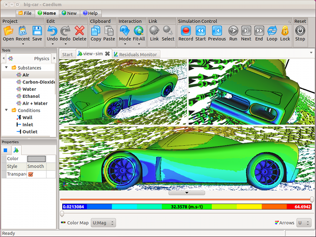

Virtual Engineering is Here
Another day, another personal concept vehicle announcement - this time the ICON A5 from ICON Aircraft. Notice a pattern here? We've seen a surge in personal concept vehicle announcements recently - remember personal air vehicles, flying cars, personal helicopters, personal jetpacks and even personal submarines? Is it a coincidence or are there underlying forces making such vehicles inevitable?
Computer-Aided Engineering
Virtual engineering tools, collectively referred to as Computer-Aided Engineering (CAE) software, are a major reason we are seeing a surge in personal concept vehicles. Ever more usable and affordable CAE tools, such as Caedium and its add-ons, allow virtual prototyping and even marketing of products. By avoiding costly physical prototypes the door is open to almost anyone with an idea to realize it virtually, using Computer-Aided Design (CAD) software, and assess it using analysis tools, such as Computational Fluid Dynamics (CFD). Followed by photo-realistic rendering, using POV-Ray for instance, potential customers are able to see a realistic glimpse of the new product.
Caedium Unified Simulation Environment
Based on the response to virtual marketing material, the designers can gauge whether a concept design justifies ramping up investment and making the physical product. In some cases, such as the ICON A5, customers are asked for deposits based on the virtual product specification and presentation, which are then used to partly finance further product development, such as physical prototypes for flight tests.
Outsourcing
Another major contributor to realizing a personal concept vehicle, such as the ICON A5, is the ability to subcontract or outsource its manufacture to specialists familiar with advanced materials, such as carbon fiber.
As an example, consider that BAE Systems contracted race car chassis manufacturer Lola and race car engine maker Cosworth to build a physical demonstrator of their Talisman Unmanned Underwater Vehicle (UUV). The same reasoning saw Boeing subcontract physical construction of their X-48B blended wing-body concept to Cranfield Aerospace. This type of total outsourcing is only possible with a complete and accurate 3D design blueprint. CAE software, with its 3D digital depiction of a complete product, makes outsourcing an attractive option.
People
Of course probably the most important aspect to any product development effort is people - from the people with the idea, to the people with funding, to reaching the people who (hopefully) want to buy the final product. That's a whole lot of communication, and since the advent of the internet it has never been easier or cheaper to reach out and share information.
All Together
The reasoning presented here justifying the surge in personal concept vehicles applies equally well to virtually all other branches of engineering too. In the past, only large customer numbers justified designing and manufacturing products - think General Motors. Fortunately, we now live in an age where ever smaller customer numbers can be served profitably with niche products (ala The Long Tail) designed by small companies (even hobbyists) with minimal resources using virtual engineering tools. Outsourcing manufacturing to specialists keeps initial startup costs low until a virtual concept design proves its worth to potential customers. And the entire development, manufacturing and marketing efforts are well oiled by the ease of communication using the internet.
Feedback
Questions? Ideas? Problems?

Recent blog posts
- CFD Simulates Distant Past
- Background on the Caedium v6.0 Release
- Long-Necked Dinosaurs Succumb To CFD
- CFD Provides Insight Into Mystery Fossils
- Wind Turbine Design According to Insects
- Runners Discover Drafting
- Wind Tunnel and CFD Reveal Best Cycling Tuck
- Active Aerodynamics on the Lamborghini Huracán Performante
- Fluidic Logic
- Stonehenge Vortex Revealed as April Fools' Day Distortion Field
 Get our Blog feed
Get our Blog feed
Comments
Stirling hot air motors
Hi Rick, I am glad I found your website. I have beengetting frustrated with a 1913 hot air fan i am currently restoring, but havnt been able to get it fired up . However , i noticed your schematics, and found that the assembly was incorrect , when I bought it a auction, and when diassembling made notes of the various parts and postions etc. basically the problem was , i had the '' conrods at 180 degrees , instead of 12 oclock and 3 oclock , and i think also , the travel of the piston is assembled wrong, and should be turned around, where there is more travel. So tonight, i will see , if the fan works , and continue with the restoration
Cheers Peter henstridge
Glad to Help
Hi Peter,
Great to hear that my article (animation) helped. I presume you are referring to "Stirling Engine Cools Chips."
So did it work?
Re : Hot Air Fan
Hi Rich, sorry for not getting back to you , I was looking for something else , and found you had responded to my email via your website. yes the fan does work , after about 200 odd houirs on the rebuild. If you go into Google and search for Hot Air Fan 1914 you will see a 3 odd minute video with the fan running. The fan is noisey due to the camera amplfying the sound where it sounds like an old printing press. I have since improved the running , where this may interest you , where I was using MARINE 2 stoke for the lubricating.The funny thing through my various expierments, is i tried two stroke oil for HOT AIR motors such as lawnmowers, whipper snippers etc. where i thought with marine 2 stoke the water ''sea '' is basically the same temperature all year round , and with out boards , they operate top a particular temperature. The Air temperature as we know can go from 0 Celsius to 50 odd celsius. I found with the LAWN MOWER 2 stroke to be slightly thicker ,the stirling motor quiter and actually ran longer on various bench test's. So, if your looking for a lubricant for hot airmotors i would recomend the lawnmower 2 stoke oil. my email address is radiogrambloke@bigpond.com and yes the schematics did help , but fell for the trap , it was actually a front view and not a rear view , as I could get the motor to work, once I reassembled and realized your animation was a front view , to show the 12 oclock and 3 oclock . sorry in the search you will it in Metacafe or you tube ''look for a RCA cloth in the back ground. the fan will pop up in the first page or 2
Cheers
Peter Henstridge
ICON A5 at 2009 AirVenture/Oshkosh
The ICON A5 made an appearance at 2009 AirVenture/Oshkosh. For details try the Wired post on Autopia: "Forget The Harley. Fly an Icon Instead"